Vue d'ensemble et navigation
L'application s'organise autour d'une barre d'onglets toujours visible en bas de l'écran (Catalogue, Hors-ligne, Recherche, Écoutes, Espace) et de deux icônes dans la barre du haut : le compte (à droite) et les paramètres (engrenage, à côté).
flowchart TB
Home(["Catalogue<br/>thèmes"]) --> Theme["Thème<br/>séances chronologiques"]
Theme --> Seance["Séance<br/>télécharger ou écouter en ligne"]
Seance --> Player["Lecteur<br/>texte, concepts, signalement, Zotero"]
Search(["Recherche<br/>tout le corpus ou hors-ligne"]) --> Player
History(["Écoutes<br/>reprendre où on s'était arrêté"]) --> Player
Player -. reprise automatique .-> History
Account(["Compte<br/>icône en haut à droite"]) --> Annotations["Mes annotations<br/>mes signalements"]
Player -- "signaler" --> Account
Storage(["Espace<br/>quota, séances téléchargées"])
Settings(["Paramètres<br/>version, mises à jour"])
Home -. "icône ⚙" .-> Settings
subgraph TabBar["Barre d'onglets (toujours visible)"]
Home
Search
History
Storage
end
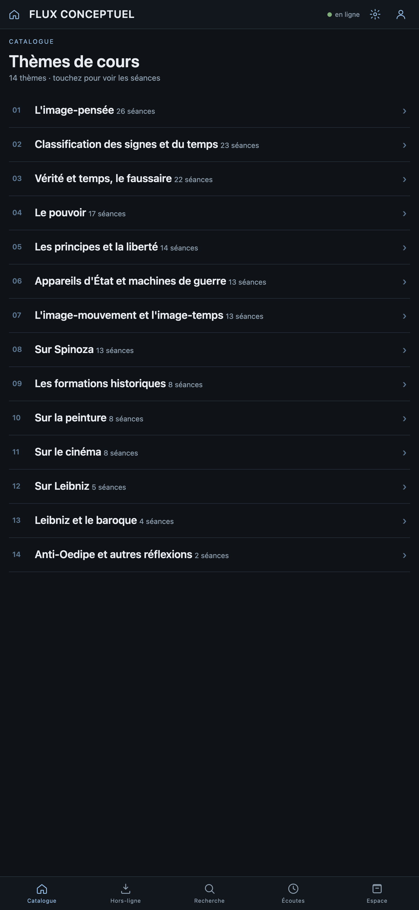
Parcourir et écouter un cours
Touchez un thème pour voir ses séances, dans l'ordre chronologique :
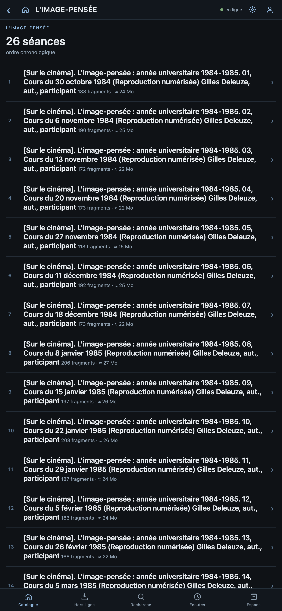
Touchez une séance pour voir son détail : titre complet, date, sujets, et le choix entre télécharger ou écouter directement en ligne.
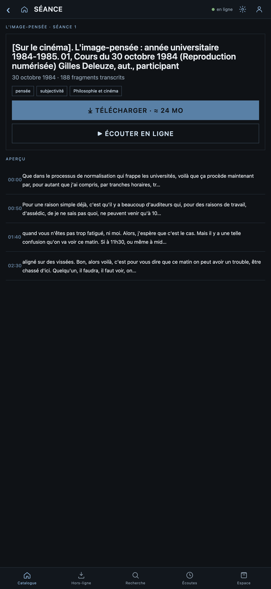
Une fois la lecture lancée, le texte défile et les concepts détectés dans le fragment courant s'affichent sous forme de pastilles :
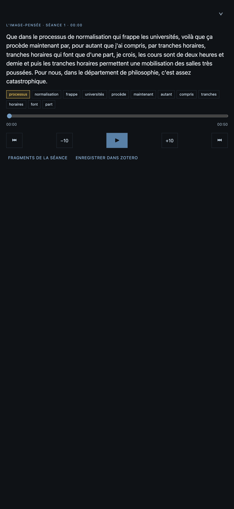
Télécharger pour écouter hors connexion
sequenceDiagram
participant U as Vous
participant App as Application
participant IDB as Stockage de l'appareil
participant API as Serveur
U->>App: ouvre une séance, touche « Télécharger »
App->>API: métadonnées + transcriptions de la séance
loop chaque fragment audio
App->>API: fichier .opus
App->>IDB: enregistre le fragment (texte + audio)
App-->>U: barre de progression
end
App-->>U: « Écouter » (séance disponible hors-ligne)
Note over U,IDB: plus tard, sans connexion
U->>App: touche « Écouter »
App->>IDB: lit directement les fragments stockés
App-->>U: lecture et recherche fonctionnent hors-ligne<br/>(signaler et Zotero demandent le réseau)
Le téléchargement peut être annulé en cours de route, et reprend là où il s'est arrêté s'il a été interrompu (un fichier déjà téléchargé n'est jamais retéléchargé). Les séances déjà disponibles hors-ligne portent une pastille dans la liste des séances d'un thème.
Rechercher
L'onglet Recherche propose deux portées : les séances déjà téléchargées (fonctionne hors connexion), ou tout le corpus (nécessite une connexion). Les mots recherchés sont surlignés dans les extraits de résultat, sans tenir compte des accents.
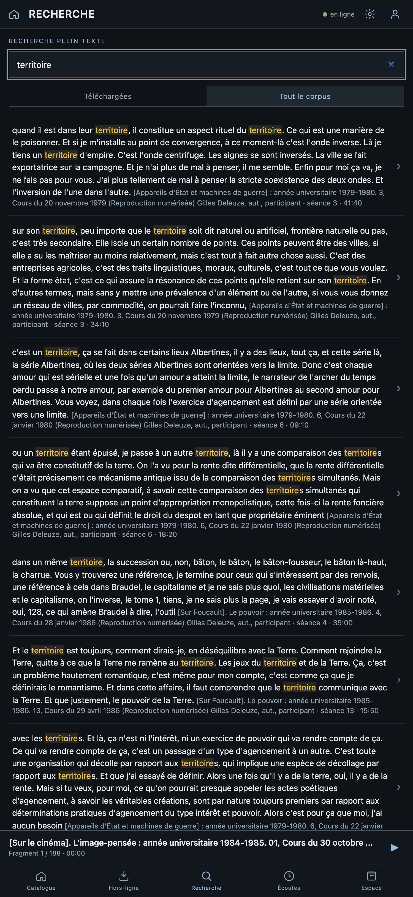
Reprendre une écoute (Écoutes)
L'onglet Écoutes mémorise, pour chaque séance déjà commencée, le fragment et la position exacts — que la séance soit téléchargée ou juste écoutée en streaming. Touchez une entrée pour reprendre exactement là où vous vous étiez arrêté.
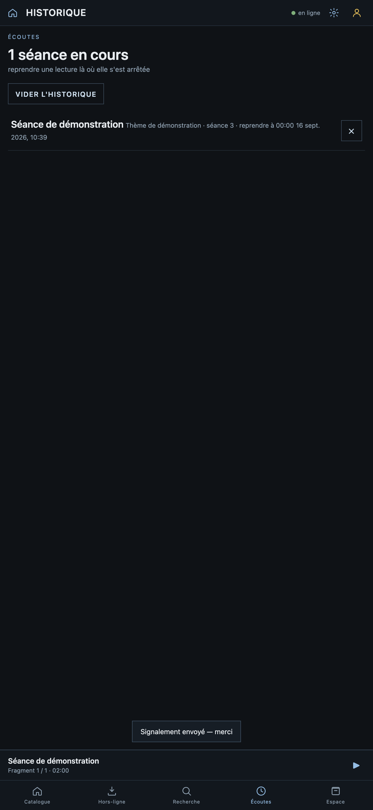
Se connecter
Se connecter permet de signaler des corrections/références dans les transcriptions et de retrouver ses propres signalements. Deux façons de se connecter, selon ce qui est activé sur le serveur :
- un compte géré par l'application elle-même (e-mail + mot de passe) — toujours disponible ;
- un compte Google, si le serveur est configuré pour.
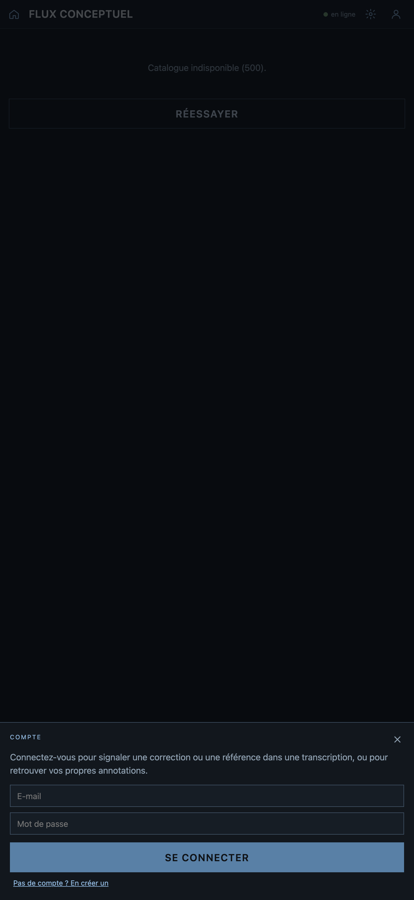
Pas encore de compte ? Le lien sous le formulaire bascule vers l'inscription :
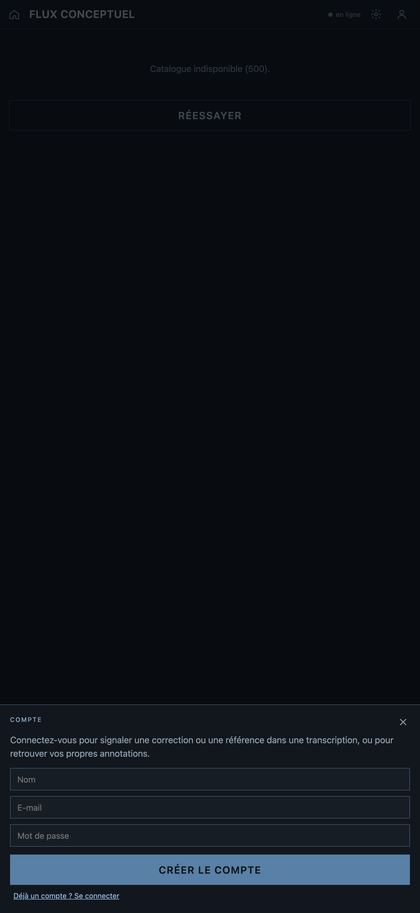
Une fois connecté, votre nom et la façon dont vous êtes connecté s'affichent, avec un accès direct à « Mes annotations » :
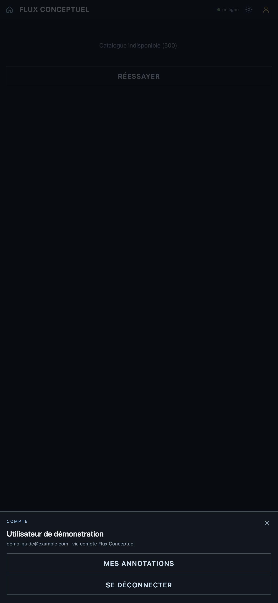
sequenceDiagram
participant U as Vous
participant App as Application
participant API as Serveur
U->>App: touche l'icône compte
alt compte e-mail / mot de passe
U->>App: e-mail + mot de passe (ou « en créer un »)
App->>API: POST /api/auth/register ou /login
API-->>App: jeton de session (30 jours)
else compte Google
U->>App: « Se connecter avec Google »
App->>App: fenêtre Google, jeton renvoyé à l'app
end
App-->>U: connecté — les boutons de signalement apparaissent
U->>App: ouvre un fragment, touche l'icône de signalement
U->>App: sélectionne le premier puis le dernier mot du passage
U->>App: décrit la correction ou la référence, envoie
App->>API: jeton + fragment + passage sélectionné + texte
API->>API: revérifie le jeton (Google, ou localement pour un compte API)
API-->>App: signalement enregistré
App-->>U: « Signalement envoyé — merci »<br/>visible dans « Mes annotations »
Signaler une correction ou une référence
Une fois connecté, cinq icônes apparaissent dans le lecteur : corriger la transcription, ou signaler une référence à une personne, une œuvre, une date/période, ou un lieu.
Touchez-en une : le texte du fragment devient sélectionnable. Touchez le premier mot du passage concerné, puis le dernier (ou le même mot deux fois pour un seul mot) :
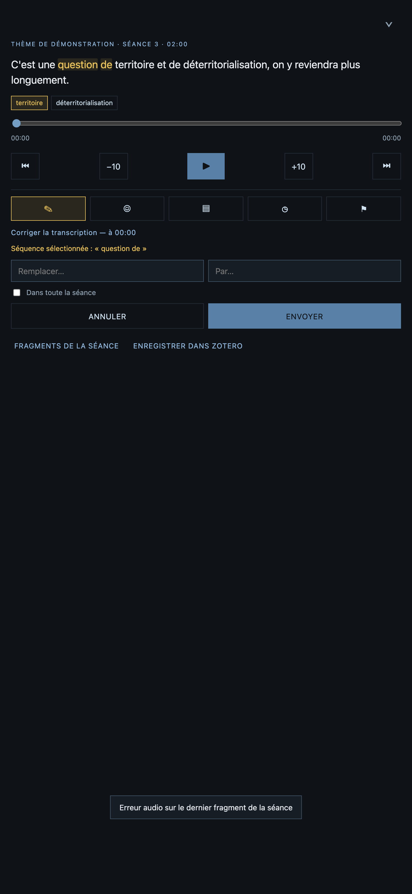
Remplissez le formulaire — pour une correction, le texte à remplacer et le remplacement ; pour une référence, une description libre — puis envoyez :
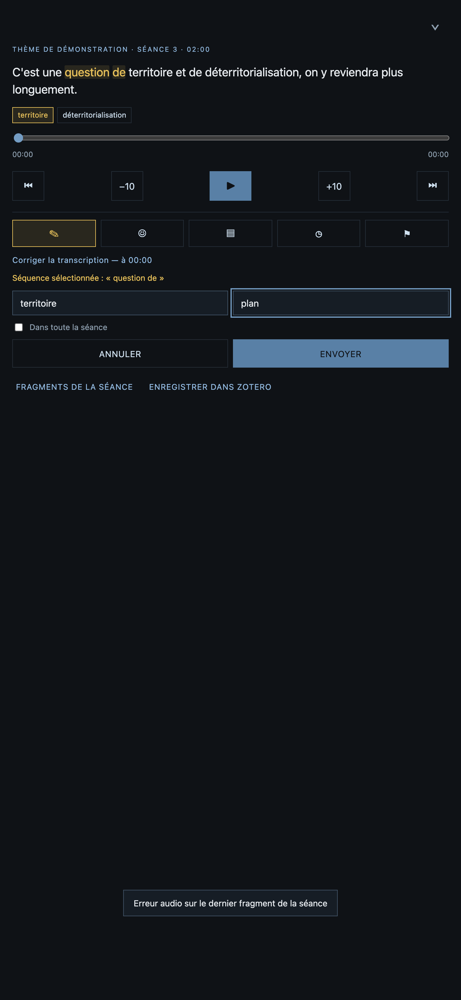
Retrouver ses annotations
« Mes annotations », accessible depuis la feuille Compte une fois connecté, liste tous vos signalements — type, contenu, horodatage, statut de traitement :
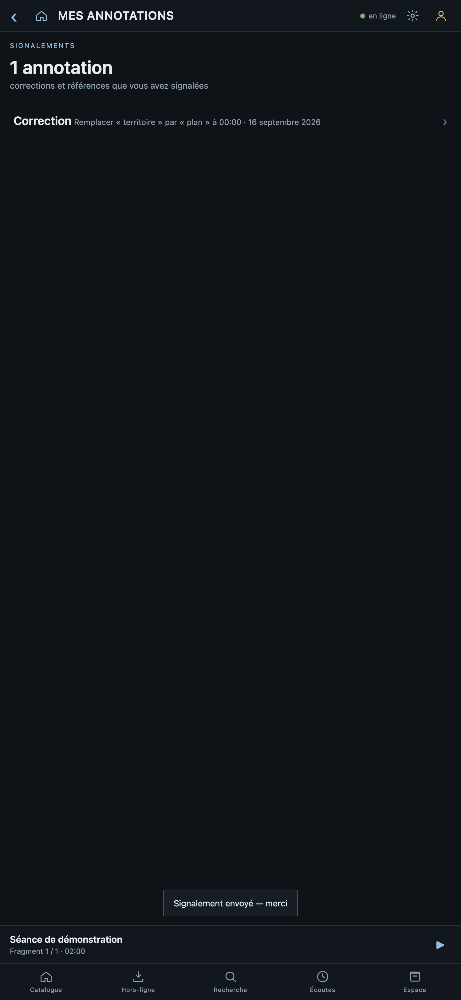
Les signalements déjà créés par d'autres utilisateurs sur un fragment s'affichent aussi directement dans le lecteur, sous les concepts détectés — public, sans avoir besoin d'être connecté pour les consulter.
Extraire un passage vers Zotero
Dans le lecteur, « Enregistrer dans Zotero » propose de découper l'audio sur un passage précis (pas le fragment entier) et de l'envoyer dans votre bibliothèque Zotero personnelle.
Sélectionnez le passage exactement comme pour un signalement (premier mot, puis dernier) :
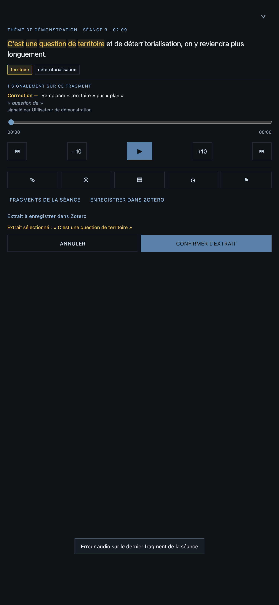
La première fois, l'application demande votre identifiant et une clé API Zotero (avec droit d'écriture) :
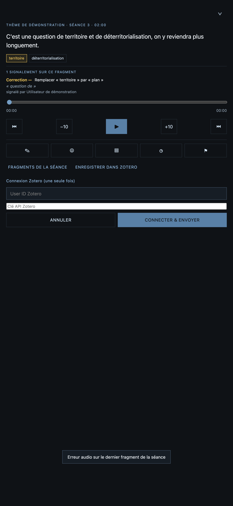
sequenceDiagram
participant U as Vous
participant App as Application
participant Zot as Zotero
U->>App: touche « Enregistrer dans Zotero »
U->>App: sélectionne le premier puis le dernier mot du passage
U->>App: « Confirmer l'extrait »
App->>App: découpe l'audio du fragment sur ce passage (dans le navigateur)
alt première fois
App-->>U: demande le compte Zotero (User ID + clé API)
U->>App: identifiants
App->>Zot: vérifie la clé
end
App->>Zot: crée (ou retrouve) l'item de la séance
App->>Zot: crée l'item de l'extrait (texte, durée, source BnF)
App->>Zot: envoie l'audio découpé en pièce jointe
Zot-->>App: confirmation
App-->>U: « Extrait enregistré dans Zotero »
La fenêtre temporelle de l'extrait est une estimation (proportionnelle à la position des mots sélectionnés dans le texte), pas une coupe exacte au mot près — cette application n'a pas d'horodatage par mot dans ses données.
Gérer l'espace de stockage
L'onglet Espace montre le poids total téléchargé, le quota estimé du navigateur, et la liste des séances disponibles hors-ligne (avec suppression individuelle ou totale). Un bouton propose de demander un stockage persistant, pour réduire le risque que le navigateur efface les données automatiquement en cas de manque de place.
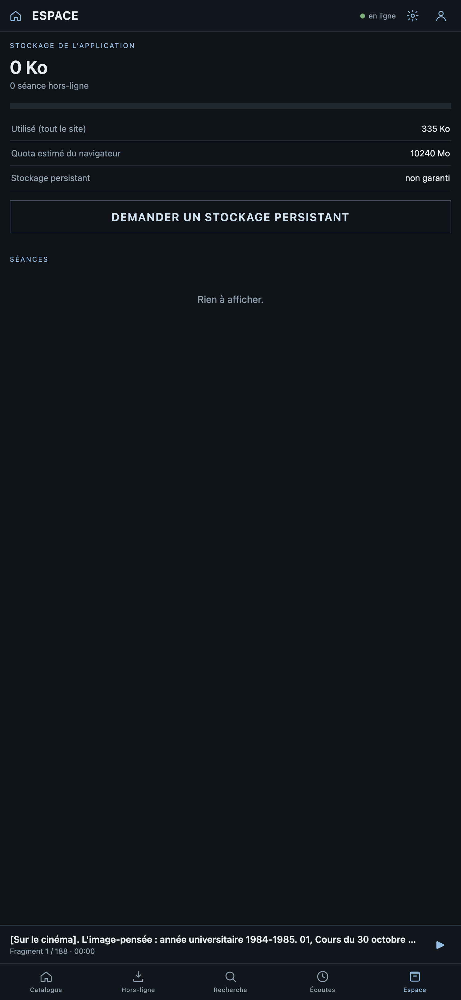
Paramètres
L'icône engrenage (à côté de l'icône compte) ouvre un écran avec le numéro de version de l'application (commit du dépôt), un lien vers le code source, un lien vers la documentation, et un bouton pour vérifier explicitement les mises à jour.
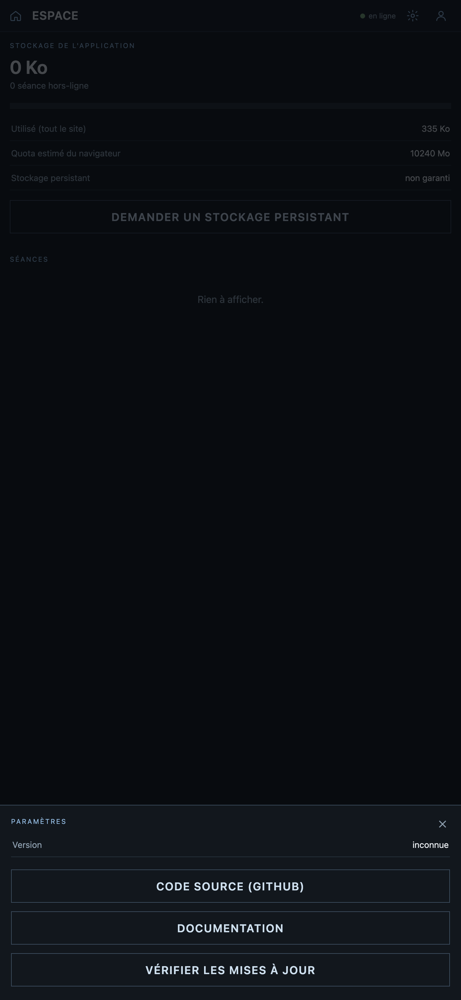
Modèle de données
Vue d'ensemble des notions manipulées par l'application et de leurs relations :
classDiagram
class Seance {
+titre
+theme
+date
+num
+sujets
telecharger()
supprimer()
}
class Fragment {
+texte
+debut
+fin
+concepts
+audio
}
class Compte {
+nom
+email
+fournisseur : "api" ou "google"
seConnecter()
seDeconnecter()
}
class Signalement {
+type : correction, personne, œuvre, date, lieu
+passageSelectionne
+texte
+horodatage
+statut
}
class ExtraitZotero {
+passageSelectionne
+dureeReelle
+fichierAudio
}
Seance "1" --> "*" Fragment : contient
Compte "1" --> "*" Signalement : signale
Fragment "1" --> "*" Signalement : concerné par
Fragment "1" --> "*" ExtraitZotero : source de
Compte "1" --> "*" ExtraitZotero : envoie
Questions fréquentes
- Je ne vois aucun bouton pour signaler une correction.
- Il faut être connecté (icône compte, en haut à droite) — les cinq icônes de signalement n'apparaissent que dans le lecteur, une fois connecté.
- « Sélectionnez la séquence de mots concernée » — je ne peux pas envoyer mon signalement.
- La sélection d'un passage (premier mot puis dernier) est obligatoire, aussi bien pour un signalement que pour un extrait Zotero.
- Je ne suis pas connecté à Zotero mais j'ai un compte Flux Conceptuel — pourquoi le formulaire Zotero réapparaît ?
- Ce sont deux comptes indépendants : le compte de l'application sert aux signalements, le compte Zotero (User ID + clé API) sert uniquement à l'export d'extraits audio.
- L'écran Paramètres affiche « Version : inconnue ».
- Le numéro de version dépend d'un outil (
git) disponible côté serveur ; si ce n'est pas le cas, la version reste simplement non affichée — cela n'affecte aucune autre fonctionnalité. - La lecture s'arrête toute seule pendant que j'écoute.
- Ça ne devrait plus arriver : une erreur audio sur un fragment passe automatiquement au suivant, et un passage hors connexion reprend tout seul dès le retour du réseau. Si ça persiste, c'est à signaler au responsable du serveur.